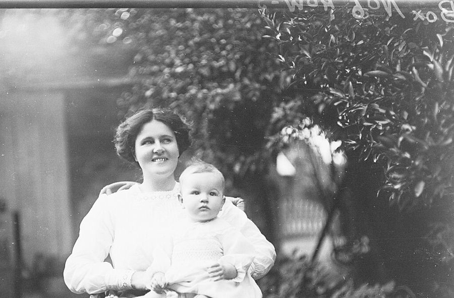

3 lembranças novas desde a sua última visita ver
Yasmim
2026
O mundo não se limita ao que você conhece.
Nem você, ao que acredita ser.
2009
por volta de março

Não lembro o assunto. Lembro desse dia.
dezembro


2012
primeiro dia de aula nova


Você pediu para repetir a foto. Esta ficou.
2016
férias nova
▶ ver vídeo · 0:42
Ninguém sabia filmar. Ainda bem.
2026
terceirão nova
depois
em breve.